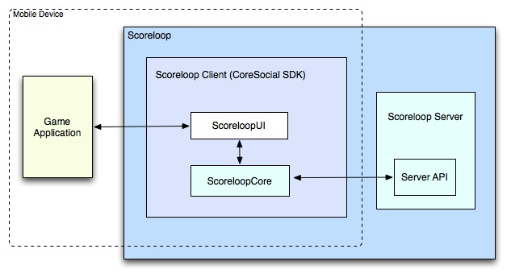

ScoreloopUI for Android

Overview
ScoreloopUI lets developers add social features to their games. It comes with a ready-built user interface meaning that integrating ScoreloopUI with your application is quick and easy. ScoreloopUI is built on top of ScoreloopCore. The diagram below gives an overview of the infrastructure used.

|
Getting Started
The list of features supported by ScoreloopUI, including some FAQs can be found below:
The following links provide instructions for getting started with ScoreloopUI.
The CoreSocial SDK
ScoreloopUI and ScoreloopCore together form Scoreloop's CoreSocial SDK. For developers who do not wish to use ScoreloopUI they can use the ScoreloopCore low-level APIs to integrate Scoreloop's features. Developers who do this will, however, have to build their own user interface.
For more details on ScoreloopCore documentation, open ScoreloopCore_doc.html from the Scoreloop_SDK_Download/Docs folder.